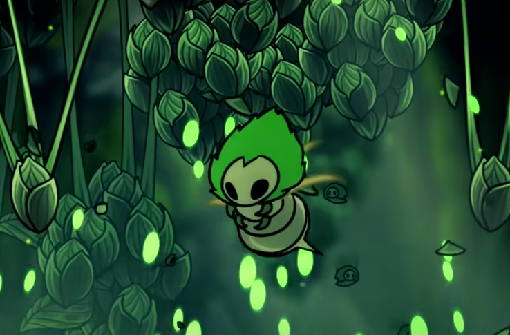
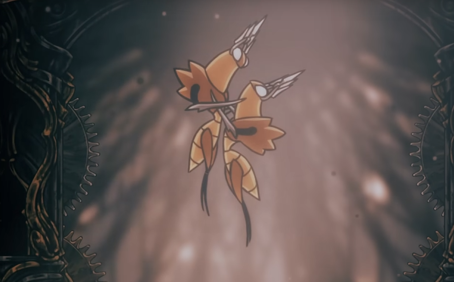
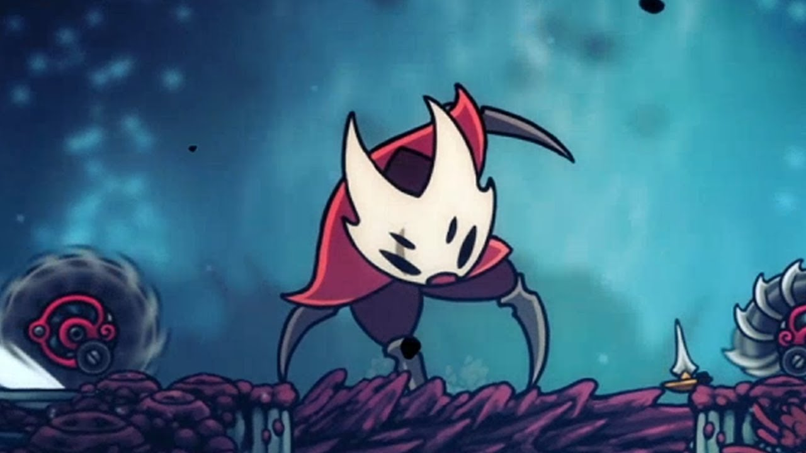

Sobreviva aos Guardiões de Pharloom
Cada região de Silksong apresenta inimigos únicos, mas os verdadeiros desafios aparecem nas batalhas contra os grandes chefes do reino.

Lace
Uma misteriosa guerreira mascarada que acompanha Hornet durante sua jornada.
Extremamente rápida e elegante, Lace luta utilizando ataques precisos e movimentos acrobáticos.
Sua presença representa uma das rivalidades centrais de Silksong.

Moss Mother
Uma criatura colossal coberta por vegetação e raízes vivas.
Encontrada nas regiões iniciais do jogo, Moss Mother introduz o jogador às batalhas intensas e agressivas de Silksong.

Cogwork Dancers
Um duelo caótico contra máquinas dançantes sincronizadas por mecanismos antigos.
A batalha mistura velocidade, múltiplos ataques simultâneos e movimentação constante pela arena.

Fourth Chorus
Um culto fanático escondido nas profundezas religiosas de Pharloom.
Seus ataques são guiados por cantos, explosões e manipulação da arena.
A luta possui uma atmosfera pesada, quase ritualística.

Crust King Khann
Um enorme guerreiro blindado escondido nos portos subterrâneos.
Seus ataques lentos porém devastadores exigem precisão absoluta do jogador.
Great Mother Silk
No confronto final de Silksong, Hornet encara uma entidade ancestral ligada ao destino do reino, uma presença silenciosa que manipula os fios da canção e da seda desde as sombras. A batalha exige domínio absoluto das habilidades adquiridas ao longo da jornada, culminando em um desfecho tão belo quanto devastador.